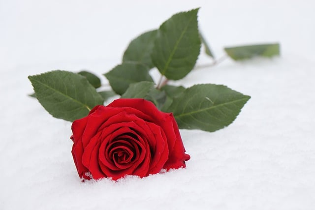
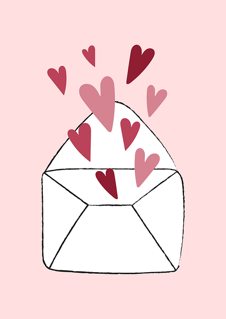

History

It is unknown the exact origination of the holiday,One Saint Valentine was supposedly a Roman priest who performed secret weddings against the wishes of the authorities in the third century. Imprisoned in the home of a noble, he healed his captor’s blind daughter, causing the whole household to convert to Christianity and sealing his fate. Before being tortured and decapitated on February 14, he sent the girl a note signed “Your Valentine.”
While some accounts say another saint named Valentine during the same period was the Bishop of Terni, also credited with secret weddings and martyrdom via beheading on February 14.
Growth of the holiday

The day is popular in the United States as well as in Britain, Canada, and Australia, and it is also celebrated in other countries, including Argentina, France, Mexico, and South Korea. In the Philippines it is the most common wedding anniversary, and mass weddings of hundreds of couples are not uncommon on that date. The holiday has expanded to expressions of affection among relatives and friends. Many schoolchildren exchange valentines with one another on this day.
Traditions

Valentine’s Day is commonly celebrated by exchanging handmade or store-bought “Valentines” (greeting cards) or other tokens of affection like chocolates and flowers. In many schools, it has become customary for young students to bring in Valentines to swap with classmates. Traditions of the holiday’s observance can vary with the country.